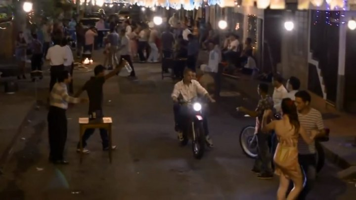

Colombia frente a la violencia del narcotráfico
Durante las décadas de 1980 y 1990, Colombia vivió una etapa de violencia marcada por las acciones de organizaciones narcotraficantes, los asesinatos selectivos, los atentados y los enfrentamientos con las autoridades.
Ciudades como Medellín sufrieron especialmente las consecuencias de esta violencia. Muchas personas perdieron familiares, otras tuvieron que abandonar sus hogares y numerosas comunidades vivieron bajo el miedo y la incertidumbre.
Detrás de las historias de los grandes capos existieron miles de víctimas cuyas experiencias también forman parte de la historia del país.